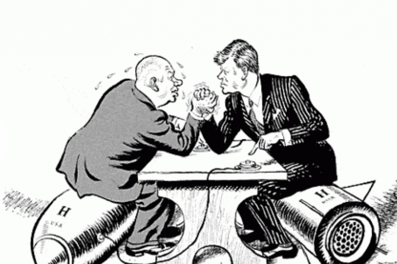
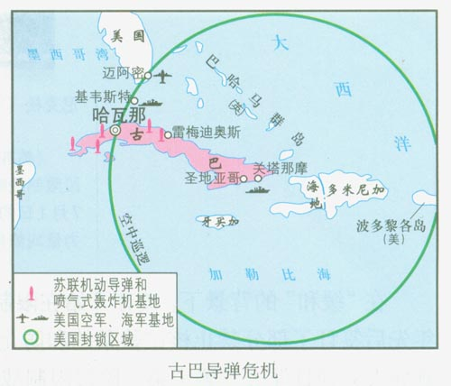
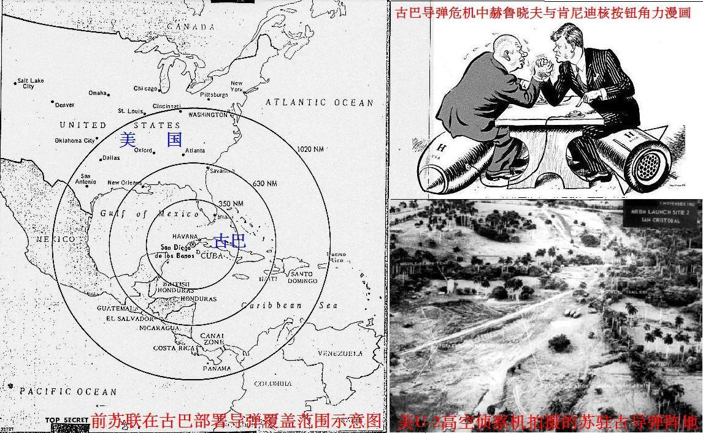

古巴导弹危机Cuban Missile Crisis）,又称加勒比海导弹危机，是1962年10月22日
冷战时期在美国、苏联与古巴之间爆发的一场极其严重的政治、军事危机。事件爆发的直接
原因是苏联在古巴部署导弹。这个事件被看作是冷战的顶峰和转折点。在世界史中人类从未
如此近地站在一场核战争的边缘，甚至有人称之为差点毁灭世界的13天。

古巴导弹危机 图一
1962年，加勒比海地区发生了一场震惊世界的古巴导弹危机。这场危机差一点引发了
核战争，使世界处于千钧一发之际。在人类进入核时代以来，在美苏军备竞赛和争夺世界霸
权的激烈斗争中，没有任何一次危机达到如此惊心动魄的程度。在漫长的冷战岁月中，美国
曾四次动过使用核弹的念头。这四次核战边缘，只有古巴导弹危机最具一触即发之势，美苏
双方在核弹按钮旁徘徊。古巴导弹危机不仅使研究国际关系的人们感兴趣，而且值得生活在
和平时期的人们去回顾和思考。它作为国际关系史的经典事例，为我们以后解决危机冲突提
供良好的借鉴范式。

古巴导弹危机 图二
古巴导弹危机：差点毁灭世界的13天

古巴导弹危机 图三
| DMs and options |
S1 | S2 | S3 | S4 | S5 | S6 | S7 | S8 | S9 | S10 | S11 | S12 |
|---|---|---|---|---|---|---|---|---|---|---|---|---|
| US | ||||||||||||
| Air Strike | N | Y | N | Y | N | Y | N | Y | N | Y | N | Y |
| Blockade | N | N | Y | Y | N | N | Y | Y | N | N | Y | Y |
| USSR | ||||||||||||
| Withdraw | N | N | N | N | Y | Y | Y | Y | N | N | N | N |
| Escalate | N | N | N | N | N | N | N | N | Y | Y | Y | Y |